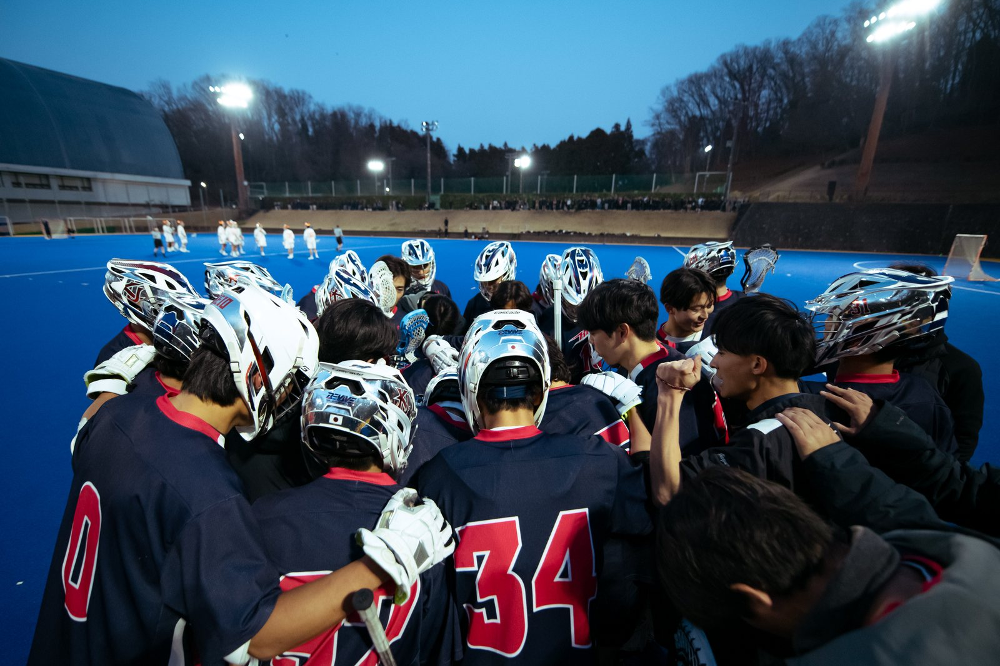
Men's Team
KING
王座復権へ
男子チームは「KING」を掲げ、王座復権を目指しています。
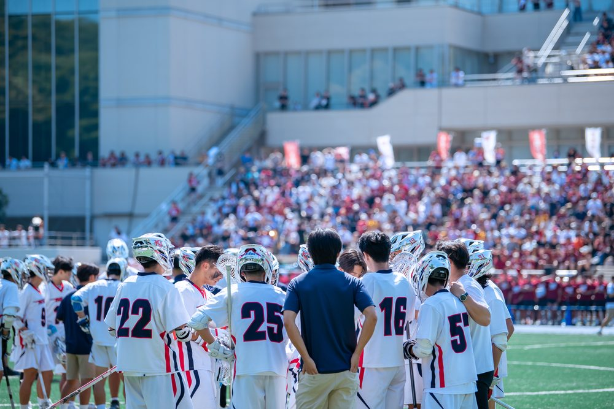
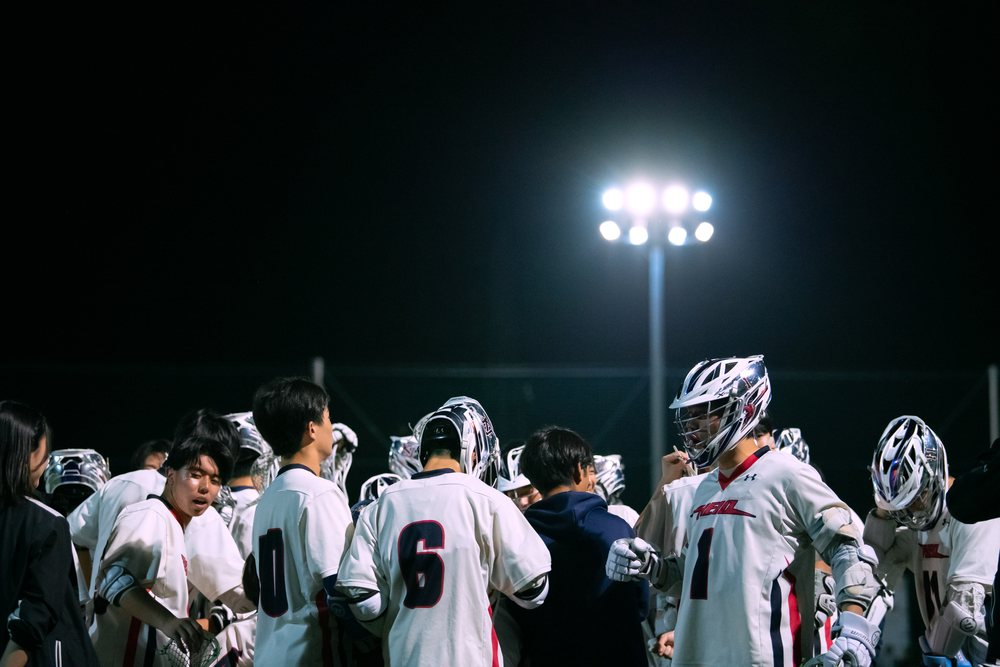
慶應ラクロスの歩みを築いてくださったOB・OGの皆様、日頃から現役部員を支えてくださる保護者・関係者の皆様、そして慶應ラクロスの挑戦に共感してくださるすべての皆様へ。
創部40周年を機に、次の世代が新たな歴史を切り拓くための力を、ぜひお寄せください。
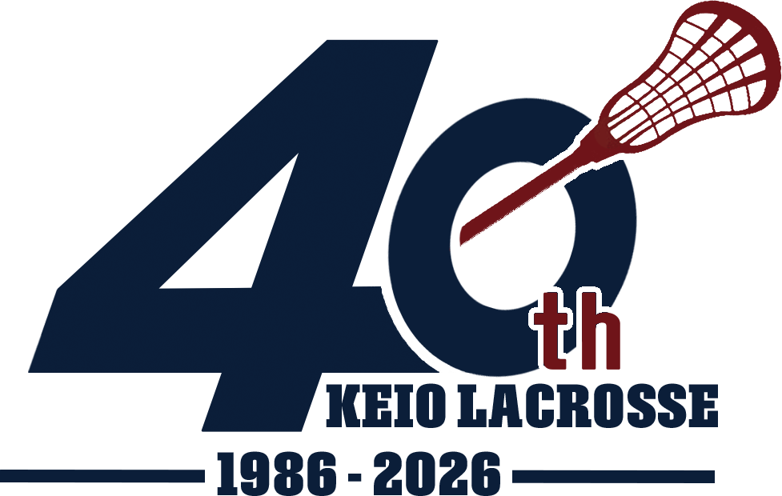
1946 → 1986
1986年、数名の学生が抱いた「誰もやったことのないことをやって、慶應の歴史に何かを刻もう」という思いから、 慶應ラクロスは始まりました。道具も情報も十分ではない時代に、仲間を集め、海外の協力者から学び、 他大学へもラクロスを広げていった先輩方。その挑戦は、日本ラクロスの扉を開く第一歩となりました。
そこから受け継がれてきたのは、未知の世界を切り拓く開拓者精神と、 支えてくださる方々への感謝を行動で返していく感謝とボランティアの精神です。 私たちは、その二つの思いを Pioneer's Pride と呼んでいます。
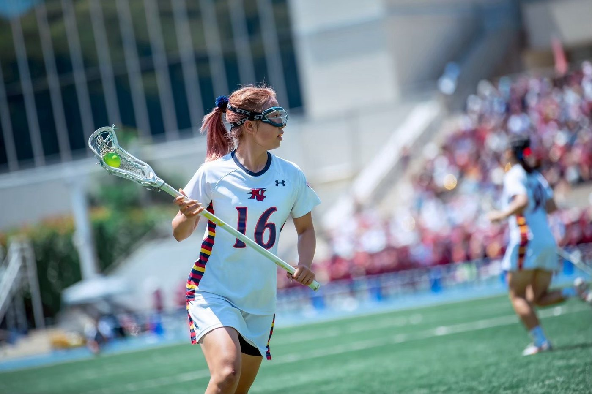
目標や戦い方はそれぞれでも、慶應ラクロスの歴史を前へ進めたいという思いは一つです。

KING
王座復権へ
男子チームは「KING」を掲げ、王座復権を目指しています。


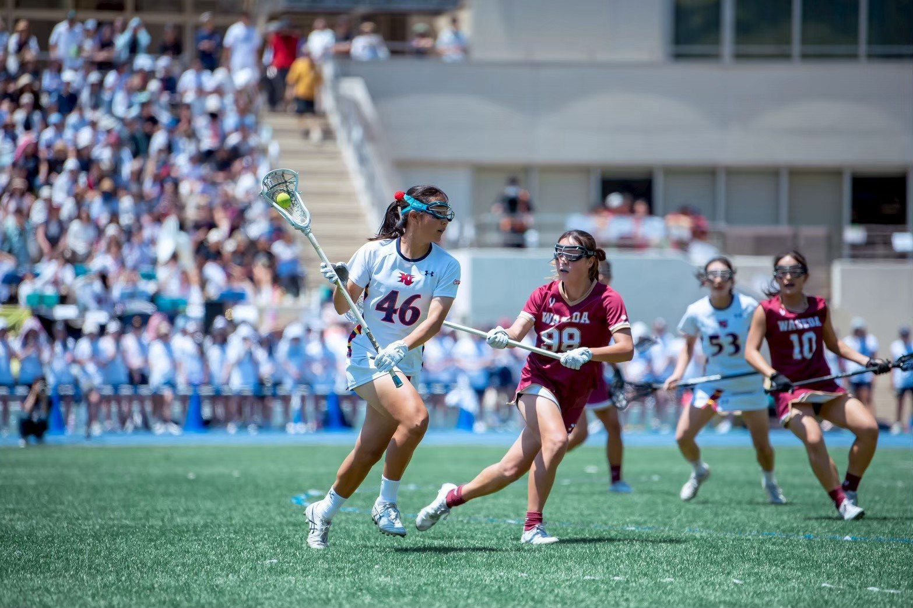
DRIVE
4年ぶりの栄光へ
女子チームは「DRIVE」を掲げ、4年ぶりの栄光を目指しています。
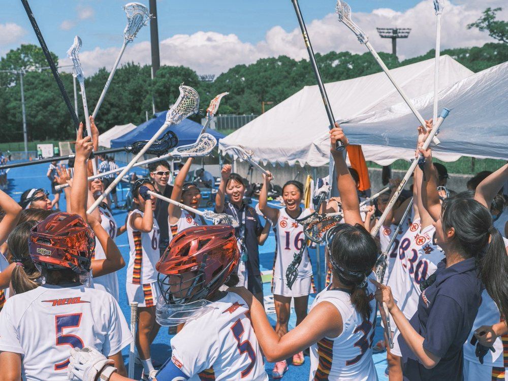
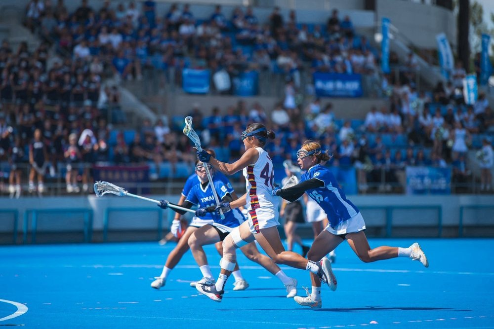
創部40周年を迎える今、ラクロス部は、先輩方が築いてくださった歴史の上に立ち、新たな挑戦を続けています。 しかし、高い目標に挑み続けるためには、部員一人ひとりの努力だけでは補えない活動基盤が必要です。
日々の練習で成長を積み重ねる環境。挑戦の機会を得るためのグラウンドや遠征。活動を継続するための共通の備品と運営基盤。 これらを整えることは、いま活動する部員のためだけではなく、 次の世代が再び新しい歴史を切り拓くための土台になります。
そこで創部40周年を機に、慶應義塾體育會ラクロス部のさらなる発展を支える40周年記念寄付金プロジェクトを立ち上げます。 皆様からお寄せいただくご寄付は、ラクロス部全体の強化資金として大切にお預かりし、 男子・女子の各チームと共通基盤の必要性を踏まえて活用します。
40年前に先輩方が始めた挑戦を、次の40年へ。
皆様のご支援を、心よりお願い申し上げます。
各領域の具体的な活用内容は、現役・指導部・実行委員会で協議の上、必要性と優先順位を踏まえて決定します。
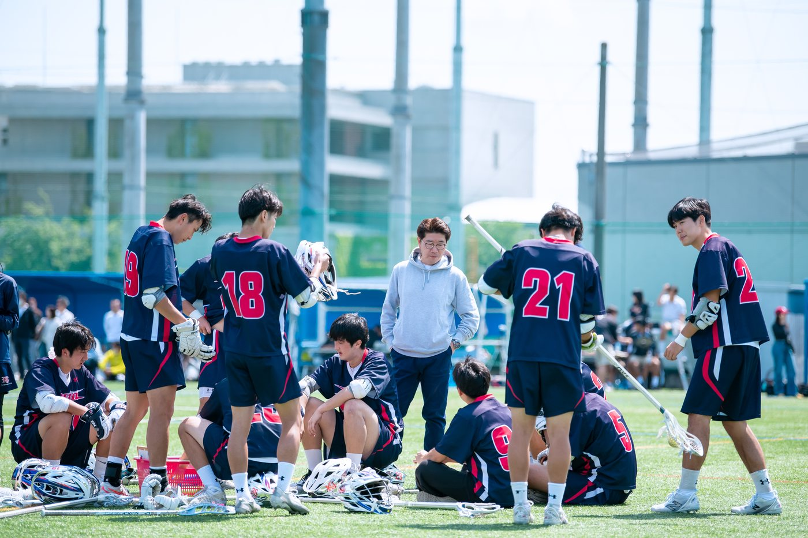
競技力の向上は、試合当日だけで生まれるものではありません。各チームの部員が、日々の全体練習に加えて 自らの技術と身体を磨き続けられる環境が必要です。ご寄付は、自主練習環境の整備をはじめ、 ラクロス部全体の練習の質を高めるために活用します。
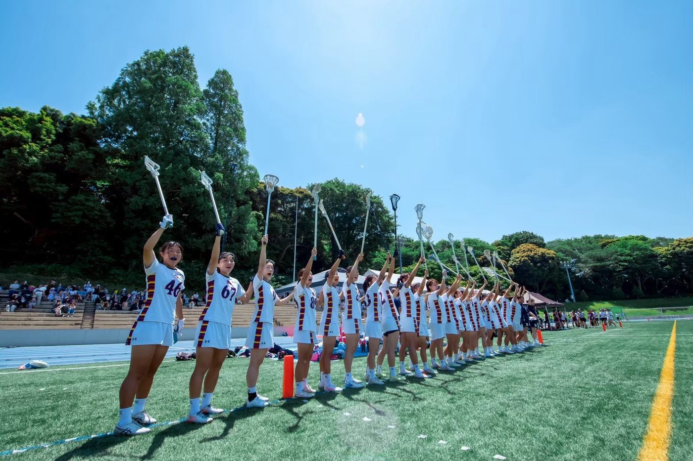
強い相手と戦い、経験を積み重ねることが、チームと部員を成長させます。グラウンドの利用や遠征、 試合に関わる活動は、男子・女子の各チームが高い目標へ挑み続けるために欠かせません。 ご寄付は、挑戦の舞台に立つための活動機会を支えます。
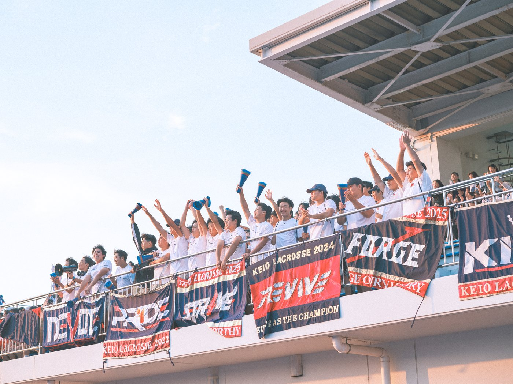
テントをはじめとする共通備品や、活動を継続するための運営基盤は、日々の練習、試合、応援の場を支えています。 ご寄付は、男子・女子の各チームを横断してラクロス部全体が活用する基盤の充実にも役立てます。
皆様からのご寄付を一元的に管理し、ラクロス部全体にとって最も必要性の高いところへ、責任を持って活用します。
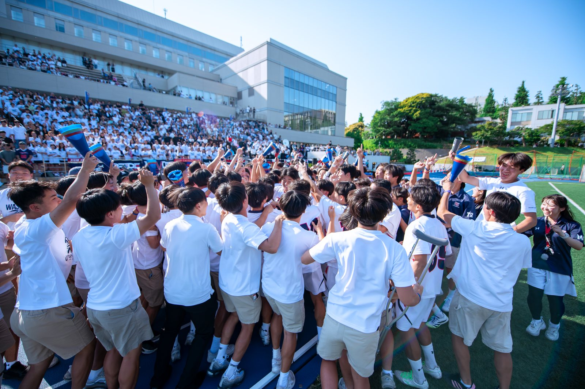
寄付金を「集めること」ではなく、皆様の思いがラクロス部の力になったことをお伝えし続けることまでが、 本プロジェクトの責任です。そのため、活用内容は可能な限り具体的に公開します。
| 報告のタイミング | 公開する内容 | 表現方法 |
|---|---|---|
| 主要な活用が実現した時点 | 整備・購入した環境や備品、実施した活動、その背景 | HP・SNSでの写真、現役部員のコメント、活動レポート |
| 年度ごと | 寄付金全体の受入額、主な活用先、ラクロス部全体・男子チーム・女子チームに関わる活用実績、翌年度への繰越がある場合の方針 | 「40周年レガシーレポート」としてHP掲載 |
| 募集期間終了後 | プロジェクト全体の総括、実現した成果、今後の運用方針 | 総括レポートとしてHP掲載 |
皆様のご寄付が、どのような環境を整え、どのような挑戦を支えたのか。
その成果を、写真と現役部員の声とともに、丁寧にお伝えします。
※「40周年レガシーレポート」は初回の報告時期に本ページから公開します。
創部40周年を機に、慶應義塾體育會ラクロス部のさらなる発展を支えるため、下記のとおり寄付金を募集しております。
上記の口座へ、ご希望の口数分をお振り込みください。
お問い合わせ先：fund@mitalax.onmicrosoft.com
試合結果や日々の活動は各公式サイトと公式LINEで発信しています。ぜひご覧ください。